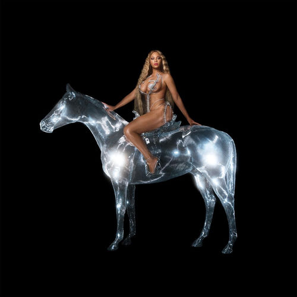

Beyoncé
RENAISSANCE

Tracklist
- I'M THAT GIRL
- COZY
- ALIEN SUPERSTAR
- CUFF IT
- ENERGY (feat. BEAM)
- BREAK MY SOUL
- CHURCH GIRL
- PLASTIC OFF THE SOFA
- VIRGO'S GROOVE
- MOVE (feat. Grace Jones; Tems)
- HEATED
- THIQUE
- ALL UP IN YOUR MIND
- AMERICA HAS A PROBLEM
- PURE/HONEY
- SUMMER RENAISSANCE
Marta Sánchez
MARTA SANCHEZ GIRA 40 AÑOS
Tracklist
- Lili Marlen (Olé Olé)
- Bailando Sin Salir De Casa (Olé Olé)
- Soldados Del Amor (Olé Olé)
- Con Solo Una Mirada (Olé Olé)
- Desesperada
- De Mujer A Mujer
- Dime La Verdad
- Arena Y Sol
- Amor Perdido
- Vivo Por Ella (con Andrea Bocelli)
- Y Sin Embargo Te Quiero
- Quiero Más De Ti
- Desconocida
- Sigo Intentando
- Soy Yo
- Si Me Cambian Los Recuerdos (con Alaska)
- Colgando En Tus Manos (con Carlos Baute)
- La Que Nunca Se Rinde
Linkin Park
METEORA
Tracklist
- Foreword
- Don't Stay
- Somewhere I Belong
- Lying from You
- Hit the Floor
- Easier to Run
- Faint
- Figure.09
- Breaking the Habit
- From the Inside
- Nobody's Listening
- Session
- Numb
Doja Cat
Scarlet 2 CLAUDE
Tracklist
- ACKNOWLEDGE ME
- DISRESPECTFUL
- URRRGE!!!!!!!!!! (feat. A$AP Rocky)
- OKLOSER
- MASC (feat. Teezo Touchdown)
- PISS
- HEADHIGH
- Paint The Town Red
- Demons
- Wet Vagina
- Fuck The Girls (FTG)
- Ouchies
- 97
- Gun
- Go Off
- Shutcho
- Agora Hills
- Can't Wait
- Often
- Love Life
- Skull And Bones
- Attention
- Balut
- WYM Freestyle